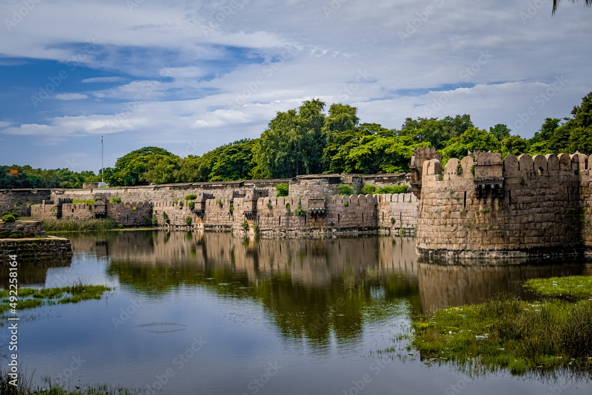
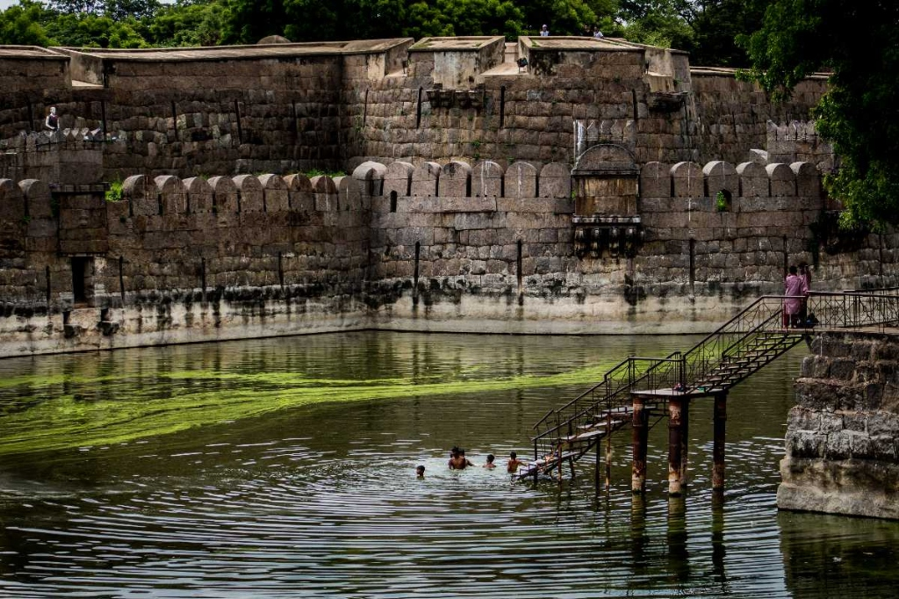
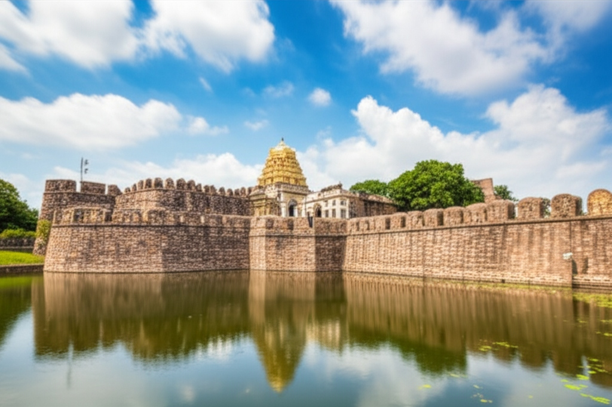
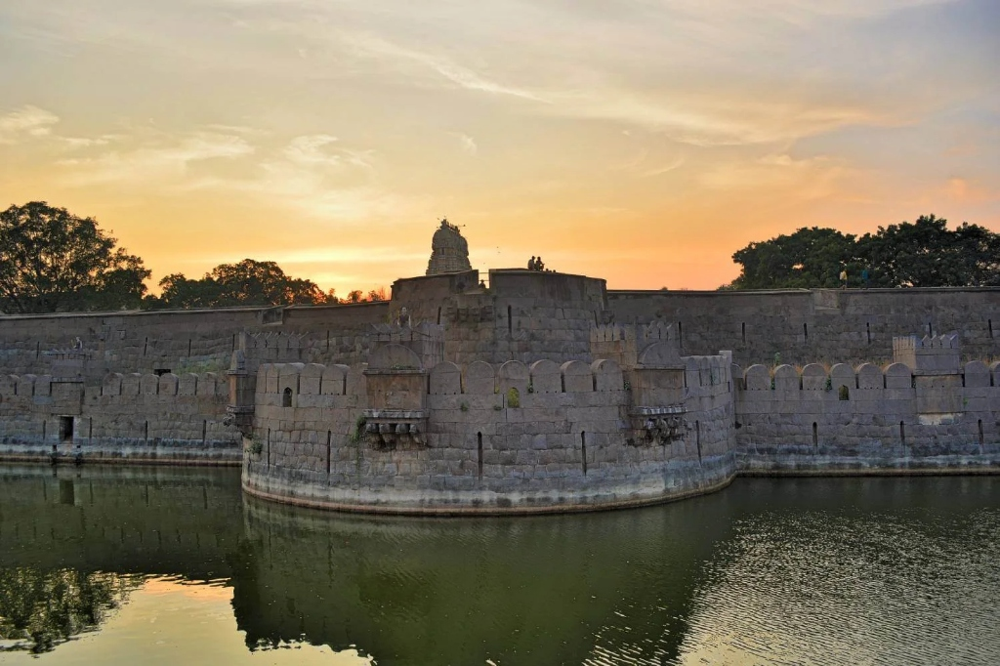

Vellore Fort
Sinna Bommi Nayak built the Vellore Fort in the 16 th century. This fort was built when the Vijayanagara Kingdom was in power in South India. But the possession of the fort was seized from one ruler to another in due course of time.
The Fort in Vellore Town has acquired its importance in history. It has a chain of association with the rulers of India as it kept changing hands from one to the other. It was built by a chieftain called Nayak. But the the Sultan of Bijapur in the 17 th century, seized the fort. In the later part of the same century, the Marathas captured the same fort in Vellore.
In the 18 th century, Daud Khan was successful in possessing the Vellore Fort. This fort was maintained by the Nawab of Arcot but he later gifted it to his son-in-law. It was under him for about 20 years until the British power captured it by force. It was under their control till India attained Independence. The family of Tipu Sultan was imprisoned in this very fort after he was killed in the hands of the British.
The Fort of Vellore is built of granite blocks. It is famous for a big moat that surrounds the fort. It is said that at one point of time, crocodiles were kept in this moat of Vellore Fort. This fort is well preserved and a tourist can also check out the mosque, a church and a temple known as Jalakanteswara Temple inside the Vellore Fort.
How to Reach Vellore Fort
- 🚌 By Bus: Frequent local buses and autos are available from Vellore Old and New Bus Stands.
- 🚆 By Train: Nearest railway station is Vellore Town (VLR) at 2 km, or Katpadi Junction (KPD) at 7 km.
- 🚕 By Taxi: Easily accessible by taxi or auto-rickshaw from any part of the city.




